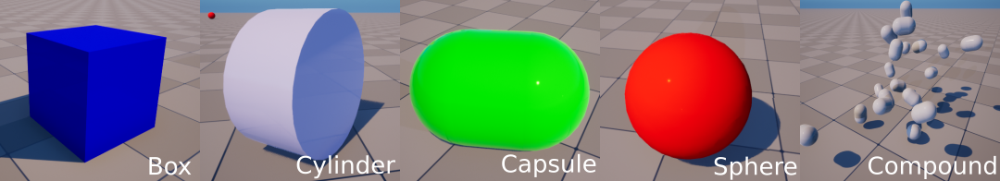
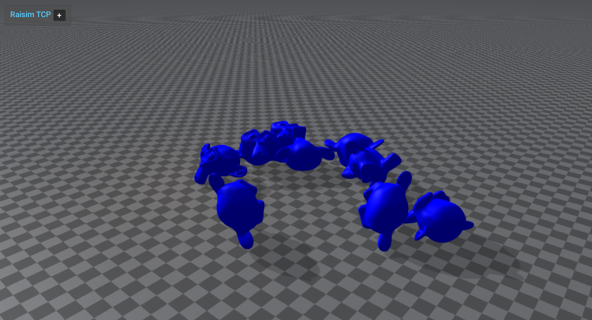

Single-Body Objects
raisim::SingleBodyObject is an object with only one rigid body.
raisim::Compound is also a SingleBodyObject because its components move together as one rigid body.
All SingleBodyObjects have 6 degrees of freedom: 3 for position and 3 for orientation.
Primitives
RaiSim supports four dynamic primitive shapes: sphere, box, capsule, and
cylinder (World::addSphere, addBox, addCapsule, and
addCylinder). World::addGround adds a static, infinite ground plane.
The image below shows the four primitives and a compound object.
The raisim::Cone class remains only for source compatibility; its
constructor raises a fatal error because the collision engine does not support
cones.

Compound
raisim::Compound has multiple primitive shapes that are rigidly attached to each other to form a single rigid body.
The shapes do not have to overlap to stay attached.
A compound object can be added to the world using the method raisim::World::addCompound.
This method takes a vector of at least two children (Compound::CompoundObjectChild), each with its own shape, material, position, and orientation.
The shape is specified by a geometric type (raisim::ObjectType: SPHERE, BOX, CAPSULE, or CYLINDER) and its size parameters (objectParam).
The objectParam follows a standard way to represent the size of a primitive in RaiSim:
Sphere: radius, 0, 0, 0
Box: x, y, z (full side lengths), 0
Capsule and cylinder: radius, height, 0, 0
The objectParam is an instance of raisim::Vec<4>.
No shape needs all four values; the unused elements (the zeroes above) are ignored.
The trans member defines the position and orientation of the child in the body frame.
It is a raisim::Transformation with public rot and pos members.
The mass, COM, and inertia arguments specify the dynamical properties of the combined body.
COM is expressed in the body frame and inertia is taken about the center of mass in the body frame;
RaiSim does not compute them from the children.
Mesh


raisim::Mesh represents a single-body object defined by a triangle mesh.
It is commonly used for props, scanned objects, and imported object models.
Meshes are added via raisim::World::addMesh.
Public mesh collision modes
The public addMesh API exposes three collision representations:
MeshCollisionMode::CONVEXIFY: CoACD convex decomposition. This creates multiple convex collision parts from one mesh. This is the default foraddMesh.MeshCollisionMode::CONVEX_HULL: one convex hull built from the mesh.MeshCollisionMode::ORIGINAL_MESH: the original non-convex triangle mesh.
Convex hulls and CoACD parts are handled as convex meshes by the collision engine, while
ORIGINAL_MESH uses the triangle-mesh pair routines; see Collision Detection and Colliders.
Original triangle-mesh collision keeps concave features and accepts meshes that are not valid
CoACD input, but it is usually slower and less robust than convex collision geometry.
Default convex approximation
The shortest overload uses CoACD convex decomposition by default and estimates inertia/COM from the scaled axis-aligned bounding box. If CoACD cannot process the mesh, RaiSim warns and falls back to a single convex hull built from the mesh:
auto* mesh = world.addMesh(meshFile, mass, scale);
The explicit-inertia overload is also convex-approximated by default:
auto* mesh = world.addMesh(meshFile, mass, inertia, com, scale);
Explicit collision modes
Use MeshCollisionMode::CONVEX_HULL for the cheapest convex mesh collider:
auto* mesh = world.addMesh(meshFile, mass, scale, "",
raisim::MeshCollisionMode::CONVEX_HULL);
Use MeshCollisionMode::ORIGINAL_MESH when you intentionally want the non-convex triangle mesh:
auto* mesh = world.addMesh(meshFile, mass, scale, "",
raisim::MeshCollisionMode::ORIGINAL_MESH);
You can still pass MeshCollisionMode::CONVEXIFY explicitly when you want to make the default
choice visible at the call site:
auto* mesh = world.addMesh(meshFile, mass, scale, "",
raisim::MeshCollisionMode::CONVEXIFY);
Custom CoACD options
Tune CoacdOptions when you need more or fewer convex parts. Lower thresholds and larger
maxConvexHull values can preserve more shape detail, but they increase build time and can
make contact processing slower.
raisim::CoacdOptions options;
options.threshold = 0.08;
options.maxConvexHull = 8;
options.sampleResolution = 1200;
options.mctsIteration = 80;
auto* mesh = world.addMesh(meshFile, mass, scale, "",
raisim::MeshCollisionMode::CONVEXIFY,
raisim::CollisionGroup(1),
raisim::CollisionGroup(-1),
options);
You can also pass options directly:
auto* mesh = world.addMesh(meshFile, mass, scale, "", options);
CoACD input requirements
The bundled CoACD integration is intentionally small and does not include heavy preprocessing dependencies. It works best with closed, reasonably manifold meshes.
If MeshCollisionMode::CONVEXIFY fails (for example, the mesh is not 2-manifold),
RaiSim prints a warning and falls back to a single convex hull (MeshCollisionMode::CONVEX_HULL)
built from the same vertices. This keeps imported visual meshes such as robot body panels usable
when they are not valid CoACD input, and avoids the deep-penetration and performance pathologies
of non-convex triangle-mesh collision. If you intentionally want the original non-convex triangle
mesh, request MeshCollisionMode::ORIGINAL_MESH explicitly.
CoACD cache files
Successful MeshCollisionMode::CONVEXIFY calls write an OBJ cache beside the
source mesh. This keeps repeated runs cheap: the first call pays the CoACD decomposition cost, while later calls with
the same parameters load the saved convex parts directly. If the directory is not writable, RaiSim
prints a warning and continues without a cache.
The file name starts with raisim_coacd_ and includes the source mesh stem, a hash of the
source mesh contents, and a hash of the scale and CoACD option values, for example:
raisim_coacd_model_src_0123456789abcdef_opt_fedcba9876543210.obj
The cache stores each convex part as a separate OBJ group named raisim_coacd_part_N. On later
addMesh calls with the same source mesh contents and CoACD parameters, RaiSim loads these groups
instead of running CoACD again, unless the cache file is older than the source mesh. The loaded
convex parts match the generated parts exactly.
Changing the source mesh contents changes the hash and therefore produces a different cache file.
Different CoACD settings also produce different cache file names, so changing options such as
threshold, maxConvexHull, sampleResolution, or mctsIteration does not reuse an
incompatible cache.
For a 16k-triangle YCB apple mesh using the default CoACD options, a local timing run took about 4.3 seconds on the first uncached call and about 49 ms on the second cached call. Exact timings are machine- and mesh-dependent, but large meshes should see the largest benefit.
These files are generated artifacts and are ignored by the repository .gitignore rules via
raisim_coacd_*. Delete the corresponding raisim_coacd_* file manually if you want to force a
fresh decomposition without editing the source mesh.
Inspection helpers
raisim::Mesh exposes the generated convex parts for debugging and visualization:
const auto& parts = mesh->getCoacdConvexParts();
std::cout << mesh->getCollisionBodyCount() << std::endl;
When CoACD falls back to a single convex hull, getCoacdConvexParts() is empty and
getCollisionBodyCount() returns 1.
The rayrai example rayrai_coacd_mesh_approximation displays original meshes next to colored
convex decomposition parts.
Model preprocessing and export
raisim::Mesh::preprocessMesh loads any Assimp-supported mesh format, applies a scale, triangulates
it, and writes a normalized OBJ cache. The output name includes a content hash and scale so repeated
runs can reuse the cached OBJ safely.
raisim::Mesh::PreprocessOptions options;
options.scale = 1.0;
options.cacheDirectory = "/tmp/raisim_mesh_cache";
auto result = raisim::Mesh::preprocessMesh("asset.glb", options);
auto* mesh = world.addMesh(result.outputPath,
1.0,
1.0,
"default",
raisim::MeshCollisionMode::CONVEX_HULL);
Use World::exportMeshAssetsToObj(directory, prefix) to export mesh objects already in a world as
normalized OBJ files. The function returns the generated paths in world-object order.
std::vector<std::string> exported = world.exportMeshAssetsToObj("/tmp/raisim_export", "scene");
Visual assets and collision assets should remain separate unless you explicitly want to reuse the same mesh for both. A high-detail textured glTF visual mesh is often unsuitable as a collision mesh; use a simplified convex hull, CoACD decomposition, or authored collision asset for simulation.
OpenUSD mesh loading
USD/USDA/USDC/USDZ files are loaded through RaiSim’s bundled OpenUSD runtime, not through
Assimp’s USD importer. OpenUSD support is included in supported RaiSim builds, so
World::addMesh accepts USD files directly:
auto* mesh = world.addMesh("asset.usd",
1.0,
1.0,
"default",
raisim::MeshCollisionMode::ORIGINAL_MESH);
The importer reads UsdGeomMesh geometry, applies parent transforms, triangulates faces,
and merges mesh prims into one RaiSim mesh object. It does not instantiate USD physics,
articulations, variants, skeletons, lights, or full material graphs. Keep collision meshes
reasonably sized, and use simplified collision assets, convex hulls, or CoACD when a USD
visual mesh is too detailed for contact.
See OpenUSD Loading for runtime layout, examples, and troubleshooting.
SingleBodyObject API (Parent class)
-
class SingleBodyObject : public raisim::Object
Base class of rigid single-body objects (Sphere, Box, Cylinder, Capsule, Mesh, Compound, Ground, …). This class is only for inheritance. The pose is that of the body frame; the COM is at getBodyToComPosition_rs() in the body frame.
Subclassed by raisim::Box, raisim::Capsule, raisim::Compound, raisim::Cone, raisim::Cylinder, raisim::Ground, raisim::HeightMap, raisim::Mesh, raisim::Sphere
Public Functions
-
explicit SingleBodyObject(ObjectType singleBodyObjectType)
Internal: called by the concrete shape constructors.
- Parameters:
singleBodyObjectType – [in] the concrete object type
-
inline Eigen::Vector4d getQuaternion() const
returns the quaternion in Eigen::Vector4d
- Returns:
the orientation of the object as a unit quaternion (w, x, y, z)
-
inline void getQuaternion(Vec<4> &quat) const
returns the quaternion in raisim::Vec<4>
- Parameters:
quat – [out] the orientation of the object as a unit quaternion (w, x, y, z)
-
inline Eigen::Matrix3d getRotationMatrix() const
returns the rotation matrix in Eigen::Matrix3d
- Returns:
the orientation of the object (body-to-world rotation)
-
inline void getRotationMatrix(Mat<3, 3> &rotation) const
returns the rotation matrix in raisim::Mat<3,3>
- Parameters:
rotation – [out] the orientation of the object (body-to-world rotation)
-
inline Eigen::Vector3d getPosition() const
returns the body frame origin in the world frame (m). It coincides with the COM unless the object has a COM offset (see getBodyToComPosition_rs())
- Returns:
the position of the object
-
inline Eigen::Vector3d getComPosition() const
returns the center of mass position in Eigen::Vector3d.
- Returns:
the COM position in the world frame (m)
-
inline const raisim::Vec<3> &getComPosition_rs() const
returns the center of mass position in raisim::Vec<3>.
- Returns:
the COM position in the world frame (m)
-
inline const raisim::Vec<3> &getBodyToComPosition_rs() const
returns the offset from the body frame origin to the COM.
- Returns:
the COM offset expressed in the body frame (m)
-
inline Eigen::Vector3d getLinearVelocity() const
returns the linear velocity
- Returns:
the linear velocity of the COM in the world frame (m/s)
-
inline void getLinearVelocity(Vec<3> &linVel)
returns the linear velocity
- Parameters:
linVel – [out] the linear velocity of the COM in the world frame (m/s)
-
inline Eigen::Vector3d getAngularVelocity() const
returns the angular velocity
- Returns:
the angular velocity of the object in the world frame (rad/s)
-
inline void getAngularVelocity(Vec<3> &angVel)
returns the angular velocity
- Parameters:
angVel – [out] the angular velocity of the object in the world frame (rad/s)
-
inline virtual void getPosition(size_t localIdx, Vec<3> &pos_w) const final
returns position vector.
- Parameters:
localIdx – [in] this should be always 0 (this method is just to keep the same api as the ArticulatedSystem class)
pos_w – [out] the body frame origin in the world frame
-
inline virtual void getOrientation(size_t localIdx, Mat<3, 3> &rot) const final
returns the orientation of the object
- Parameters:
localIdx – [in] local idx should be always 0 (this method is just to keep the same api as the ArticulatedSystem class)
rot – [out] the rotation matrix of the object
-
inline const Mat<3, 3> &getOrientation() const
returns the rotation matrix
- Returns:
rotation matrix
-
double getKineticEnergy() const
returns the kinetic energy
- Returns:
the translational plus rotational kinetic energy of the object (J)
-
double getPotentialEnergy(const Vec<3> &gravity) const
returns the gravitational potential energy, -mass * dot(gravity, COM position), i.e., zero at the world origin
- Parameters:
gravity – [in] gravitational acceleration (m/s^2)
- Returns:
the potential energy of the object (J)
-
double getEnergy(const Vec<3> &gravity) const
equivalent to getKineticEnergy() + getPotentialEnergy(gravity)
- Parameters:
gravity – [in] gravitational acceleration (m/s^2)
- Returns:
the sum of the kinetic and potential energy of the object (J)
-
Eigen::Vector3d getLinearMomentum() const
returns the linear momentum of the object
- Returns:
the linear momentum of the object in the world frame (kg m/s)
-
virtual double getMass(size_t localIdx = 0) const override
returns the mass of the object.
- Parameters:
localIdx – [in] unused
- Returns:
the mass of the object (kg)
-
inline void setMass(double mass)
set the mass of the object. The inertia is not changed (see setInertia()).
- Parameters:
mass – [in] the mass of the object (kg). Must be finite and positive
-
inline Eigen::Matrix3d getInertiaMatrix_B() const
get the inertia matrix about the COM in the body frame. This value is constant.
- Returns:
the inertia matrix in the body frame (kg m^2)
-
inline Eigen::Matrix3d getInertiaMatrix_W() const
get the inertia matrix about the COM in the world frame. This value changes as the body rotates. It is only updated for dynamic bodies.
- Returns:
the inertia matrix in the world frame (kg m^2)
-
inline const raisim::Mat<3, 3> &getInertiaMatrix_B_rs() const
get the inertia matrix in the body frame (raisim matrix type). This value is constant.
- Returns:
the inertia matrix in the body frame
-
inline const raisim::Mat<3, 3> &getInertiaMatrix_W_rs() const
get the inertia matrix in the world frame (raisim matrix type). This value changes as the body rotates. It is only updated for dynamic bodies.
- Returns:
the inertia matrix in the world frame
-
virtual ObjectType getObjectType() const final
get the object type. Possible types are SPHERE, BOX, CYLINDER, CONE, CAPSULE, MESH, HALFSPACE, COMPOUND, HEIGHTMAP, ARTICULATED_SYSTEM, DEFORMABLE, GRANULAR
- Returns:
the object type
-
CollisionBodyHandlePtr getCollisionBody() const
- Returns:
the collision body of this object (owned by the object).
-
GyroscopicMode getGyroscopicMode() const
- Returns:
the current gyroscopic integration mode.
-
virtual void setPosition(const Eigen::Ref<const Eigen::Vector3d, Eigen::Unaligned> &originPosition)
Set position of the object (using Eigen). The orientation and velocity are unchanged.
- Parameters:
originPosition – [in] position of the body frame origin in the world frame (m)
-
template<typename Position, typename std::enable_if<std::is_same<typename std::decay<Position>::type, Vec<3>>::value, int>::type = 0>
inline void setPosition(Position &&originPosition) Set position of the object (using raisim::Vec<3>)
- Parameters:
originPosition – [in] position of the body frame origin in the world frame (m)
-
virtual void setPosition(double x, double y, double z)
Set position of the body frame origin in the world frame (using three doubles)
- Parameters:
x – [in] x position
y – [in] y position
z – [in] z position
-
inline virtual void setOrientation(const Eigen::Quaterniond &quaternion)
Set orientation of the object (using Eigen::Quaterniond). The body rotates about its body frame origin.
- Parameters:
quaternion – [in] quaternion. It is normalized; a zero or non-finite quaternion is a fatal error
-
inline virtual void setOrientation(const Eigen::Vector4d &quaternion)
Set orientation of the object (using Eigen::Vector4d)
- Parameters:
quaternion – [in] quaternion (w, x, y, z). It is normalized; a zero or non-finite quaternion is a fatal error
-
inline virtual void setOrientation(const Vec<4> &quaternion)
Set orientation of the object (using raisim::Vec<4>)
- Parameters:
quaternion – [in] quaternion (w, x, y, z). It is normalized; a zero or non-finite quaternion is a fatal error
-
inline virtual void setOrientation(double w, double x, double y, double z)
Set orientation of the object (using doubles). The quaternion is normalized
- Parameters:
w – [in] quaternion w (scalar part)
x – [in] quaternion x
y – [in] quaternion y
z – [in] quaternion z
-
inline virtual void setOrientation(const Eigen::Matrix3d &rotationMatrix)
Set orientation of the object (using Eigen::Matrix3d)
- Parameters:
rotationMatrix – [in] body-to-world rotation matrix
-
inline virtual void setOrientation(const Mat<3, 3> &rotationMatrix)
Set orientation of the object (using raisim::Mat<3,3>)
- Parameters:
rotationMatrix – [in] body-to-world rotation matrix
-
inline virtual void setPose(const Eigen::Vector3d &originPosition, const Eigen::Quaterniond &quaternion)
Set both the position and orientation of the object (using Eigen::Vector3d and Eigen::Quaterniond)
- Parameters:
originPosition – [in] position
quaternion – [in] quaternion
-
inline virtual void setPose(const Eigen::Vector3d &originPosition, const Eigen::Vector4d &quaternion)
Set both the position and orientation of the object (using Eigen::Vector3d and Eigen::Vector4d)
- Parameters:
originPosition – [in] position
quaternion – [in] quaternion (w, x, y, z)
-
inline virtual void setPose(const Eigen::Vector3d &originPosition, const Eigen::Matrix3d &rotationMatrix)
Set both the position and orientation of the object (using Eigen::Vector3d and Eigen::Matrix3d)
- Parameters:
originPosition – [in] position
rotationMatrix – [in] rotation matrix
-
void setInertia(const Eigen::Ref<const Eigen::Matrix3d, Eigen::Unaligned> &inertia)
Set inertia of the object (using Eigen::Matrix3d)
- Parameters:
inertia – [in] inertia about the COM in the body frame (kg m^2). Must be finite, symmetric and positive definite
-
inline const Vec<3> &getCom()
get the center of mass position relative to the body frame origin
- Returns:
the COM offset expressed in the body frame (m)
-
inline void setCom(const Vec<3> &com)
set the center of mass position relative to the body frame origin. The body pose is preserved.
- Parameters:
com – [in] the COM offset expressed in the body frame (m)
-
inline virtual void setVelocity(const Eigen::Ref<const Eigen::Vector3d, Eigen::Unaligned> &linearVelocity, const Eigen::Ref<const Eigen::Vector3d, Eigen::Unaligned> &angularVelocity)
set both the linear and angular velocity of the object (using Eigen::Vector3d)
- Parameters:
linearVelocity – [in] the linear velocity of the COM in the world frame (m/s)
angularVelocity – [in] the angular velocity of the object in the world frame (rad/s)
-
inline virtual void setVelocity(double dx, double dy, double dz, double wx, double wy, double wz)
set both the linear (COM) and angular velocity of the object in the world frame (using 6 doubles)
- Parameters:
dx – [in] the x-axis linear velocity of the object
dy – [in] the y-axis linear velocity of the object
dz – [in] the z-axis linear velocity of the object
wx – [in] the x-axis angular velocity of the object
wy – [in] the y-axis angular velocity of the object
wz – [in] the z-axis angular velocity of the object
-
inline void setLinearVelocity(const Vec<3> &linearVelocity)
set only the linear velocity
- Parameters:
linearVelocity – [in] the linear velocity of the COM in the world frame (m/s)
-
inline void setAngularVelocity(const Vec<3> &angularVelocity)
set only the angular velocity
- Parameters:
angularVelocity – [in] the angular velocity in the world frame (rad/s)
-
virtual void setExternalForce(size_t localIdx, const Vec<3> &force) final
set external force on the object. Forces accumulate and are applied during the next integration step only.
- Parameters:
localIdx – [in] this should always be 0 (because the single body object only has one body)
force – [in] force acting on the center of the mass (expressed in the world frame, N)
-
virtual void setExternalTorque(size_t localIdx, const Vec<3> &torque) final
set external torque on the object. Torques accumulate and are applied during the next integration step only.
- Parameters:
localIdx – [in] this should always be 0 (because the single body object only has one body)
torque – [in] torque acting on body (expressed in the world frame, Nm)
-
virtual void setExternalForce(size_t localIdx, const Vec<3> &pos, const Vec<3> &force) final
set external force on the object at a point. This also produces the corresponding torque about the COM. Forces accumulate and are applied during the next integration step only.
- Parameters:
localIdx – [in] this should always be 0 (because the single body object only has one body)
pos – [in] the application point of the force (expressed in the body frame, relative to the body frame origin)
force – [in] force acting at pos (expressed in the world frame, N)
-
virtual void setConstraintForce(size_t localIdx, const Vec<3> &pos, const Vec<3> &force) final
should not be used by the users
- Parameters:
localIdx – [in] unused
pos – [in] application point in the body frame
force – [in] force in the world frame
-
void setGyroscopicMode(GyroscopicMode gyroscopicMode)
set how the gyroscopic term is integrated.
- Parameters:
gyroscopicMode – [in] the gyroscopic integration mode
-
virtual void getPosition(size_t localIdx, const Vec<3> &pos_b, Vec<3> &pos_w) const final
Get position of a point on the body
- Parameters:
localIdx – [in] this should always be 0 (because the single body object only has one body)
pos_b – [in] the point in the body frame (relative to the body frame origin)
pos_w – [out] the corresponding position in the world frame
-
inline void getPosition(Vec<3> &pos_w)
Get the body frame origin of the object
- Parameters:
pos_w – [out] the body frame origin in the world frame
-
inline virtual void getVelocity(size_t localIdx, Vec<3> &vel_w) const final
get the linear velocity of a local body or particle.
- Parameters:
localIdx – [in] local body (or particle) index
vel_w – [out] linear velocity in the world frame (m/s)
-
inline virtual void getVelocity(size_t localIdx, const Vec<3> &pos_b, Vec<3> &vel_w) const final
get the world velocity of a point fixed to a local body.
- Parameters:
localIdx – [in] local body index
pos_b – [in] the point in the body frame
vel_w – [out] the point velocity in the world frame (m/s)
-
virtual void preContactSolverUpdate1(const Vec<3> &gravity, double dt) final
Internal: first per-step update before the contact solver (called by World).
- Parameters:
gravity – [in] gravitational acceleration (m/s^2)
dt – [in] time step (s)
-
virtual void preContactSolverUpdate2(const Vec<3> &gravity, double dt, contact::ContactProblems &problems) final
Internal: second per-step update before the contact solver (called by World).
- Parameters:
gravity – [in] gravitational acceleration (m/s^2)
dt – [in] time step (s)
problems – [inout] contact problems of the world
-
virtual void integrate(double dt, class World &world) final
Internal: integrates the state after the contact solve (called by World).
- Parameters:
dt – [in] time step (s)
world – [in] the owning world
-
virtual void getContactPointVel(size_t pointId, Vec<3> &vel) const final
get the contact point velocity used by the contact solver (the velocity being solved for, not the state before the step). For single bodies, articulated systems and deformable objects, it is expressed in the contact frame (z is the contact normal).
- Parameters:
pointId – [in] the contact index. This is an index of a contact in the contact vector that you can retrieve from getContacts().
vel – [out] the contact point velocity
-
virtual void updateCollision() override
Internal: synchronizes the collision geometry with the current pose.
-
void setLinearDamping(double damping)
Set the linear damping that the object experiences due to air (force proportional to the COM velocity).
- Parameters:
damping – [in] the damping coefficient (N s/m)
-
void setAngularDamping(Vec<3> damping)
Set the angular damping that the object experiences due to air (proportional to the angular velocity).
- Parameters:
damping – [in] the damping coefficient in the body frame
-
virtual void setBodyType(BodyType type)
set the body type. Dynamic means that object is free to move. Kinematic means that the object can have velocity but has an infinite mass (like a conveyor belt). A kinematic body moves with its set velocity and ignores forces, gravity and contacts. Static means that the object cannot move and has an infinite mass.
- Parameters:
type – [in] the body type
-
CollisionGroup getCollisionGroup()
get the current collision group of the object. Read the “Contact and Collision” to learn what the collision group is.
- Returns:
the collision group
-
CollisionGroup getCollisionMask()
get the current collision mask of the object. Read the “Contact and Collision” to learn what the collision mask is.
- Returns:
the collision mask
-
inline void setAppearance(const std::string &appearance)
set the appearance of the object. This works in both RaisimUnity and RaisimUnreal. But depending on the visualizer, they might do different things. You can specify the color by name like “blue”, “green”, “red” You can also specify the color by a string like “0, 0.5, 0.5, 1.0”, which represent the RGBA values RayRai reserves “hidden” and “invisible” to omit the object from rendering.
- Parameters:
appearance – [in] the appearance of the object
-
inline const std::string &getAppearance() const
get the current appearance of the object
- Returns:
appearance
-
inline virtual void clearExternalForcesAndTorques() override
clear the recorded external forces and torques (the data returned by getExternalForce() etc.). This is not called by World automatically; forces set with setExternalForce() are consumed by the next step anyway.
Public Static Functions
-
static inline size_t getDOF()
Single-body objects expose a free rigid-body velocity state.
- Returns:
the dimension of generalized velocity
-
static inline size_t getGeneralizedCoordinateDim()
Single-body objects use position plus quaternion coordinates.
- Returns:
the dimension of generalized coordinate
-
explicit SingleBodyObject(ObjectType singleBodyObjectType)
Compound API
-
class Compound : public raisim::SingleBodyObject
A rigid body composed of primitive children (BOX, CYLINDER, CAPSULE, SPHERE) with user-given mass properties. Create it with World::addCompound().
Public Functions
-
Compound(const std::vector<CompoundObjectChild> &list, double mass, const Vec<3> &COM, const Mat<3, 3> &inertia)
- Parameters:
list – [in] children (at least two; fatal error otherwise)
mass – [in] total mass (kg)
COM – [in] center of mass in the body frame (m)
inertia – [in] inertia about the COM in the body frame (kg m^2)
-
inline const std::vector<CompoundObjectChild> &getObjList()
returns the children of the compound
- Returns:
the children of the compound
-
inline const std::vector<CollisionBodyHandle> &getCollisionBodyList()
returns the collision list of the compound
- Returns:
one collision body per child, in the order of getObjList()
-
virtual void setBodyType(BodyType type) final
set the body type. Dynamic means that object is free to move. Kinematic means that the object can have velocity but has an infinite mass (like a conveyor belt). A kinematic body moves with its set velocity and ignores forces, gravity and contacts. Static means that the object cannot move and has an infinite mass.
- Parameters:
type – [in] the body type
-
virtual void destroyCollisionBodies() final
Internal: releases collision bodies before removal.
-
virtual void updateContactAabbs() override
Internal: recomputes the world-frame AABBs used by the broadphase.
-
struct CompoundObjectChild
One primitive child of a compound.
Public Members
-
std::string childCompound
Child compound name (reserved, currently unused).
-
ObjectType objectType
Child object type: BOX, CYLINDER, CAPSULE or SPHERE.
-
Vec<4> objectParam
Child shape parameters (m): BOX {x, y, z full lengths}, CYLINDER/CAPSULE {radius, height}, SPHERE {radius}. Unused entries are ignored.
-
std::string material
Material name for contacts.
-
std::string appearance
Appearance material name for visualization.
-
Transformation trans
Pose of the child in the compound body frame.
-
std::string childCompound
-
Compound(const std::vector<CompoundObjectChild> &list, double mass, const Vec<3> &COM, const Mat<3, 3> &inertia)
Sphere API
-
class Sphere : public raisim::SingleBodyObject
A rigid sphere. The body frame origin is at the sphere center (= COM). Create it with World::addSphere(). Spheres use EXPLICIT_GYROSCOPIC_FORCE by default.
Public Functions
-
explicit Sphere(double radius, double mass)
- Parameters:
radius – [in] radius (m), finite and positive
mass – [in] mass (kg)
-
double getRadius() const
returns the radius of the sphere
- Returns:
the radius of the sphere (m)
-
virtual void updateContactAabbs() override
Internal: recomputes the world-frame AABBs used by the broadphase.
-
explicit Sphere(double radius, double mass)
Box API
-
class Box : public raisim::SingleBodyObject
A rigid box. The body frame origin is at the box center (= COM) and the edges are aligned with the body axes. Create it with World::addBox().
Public Functions
-
Box(double xLength, double yLength, double zLength, double mass)
- Parameters:
xLength – [in] full length along the body x axis (m)
yLength – [in] full length along the body y axis (m)
zLength – [in] full length along the body z axis (m)
mass – [in] mass (kg). The inertia is that of a uniform-density box. All values must be finite and positive (fatal error otherwise).
-
inline Vec<3> getDim() const
returns the dimension of the box
- Returns:
the full box lengths along the body x, y and z axes (m)
-
virtual void updateContactAabbs() override
Internal: recomputes the world-frame AABBs used by the broadphase.
-
Box(double xLength, double yLength, double zLength, double mass)
Capsule API
-
class Capsule : public raisim::SingleBodyObject
A rigid capsule (a cylinder capped by two hemispheres) whose axis is the body z axis. The body frame origin is at the capsule center (= COM). Create it with World::addCapsule().
Public Functions
-
Capsule(double radius, double height, double mass)
- Parameters:
radius – [in] radius of the cylinder and the caps (m), finite and positive
height – [in] length of the cylindrical section, i.e., the distance between the two cap centers (m), finite and nonnegative. The total length is height + 2 * radius
mass – [in] mass (kg)
-
double getRadius() const
returns the radius of the capsule
- Returns:
the radius of the capsule (m)
-
double getHeight() const
returns the height of the capsule
- Returns:
the length of the cylindrical section (distance between the cap centers, m)
-
virtual void updateContactAabbs() override
Internal: recomputes the world-frame AABBs used by the broadphase.
-
Capsule(double radius, double height, double mass)
Cylinder API
-
class Cylinder : public raisim::SingleBodyObject
A rigid cylinder whose axis is the body z axis. The body frame origin is at the cylinder center (= COM). Create it with World::addCylinder().
Public Functions
-
Cylinder(double radius, double height, double mass)
- Parameters:
radius – [in] radius (m), finite and positive
height – [in] full height along the body z axis (m), finite and positive
mass – [in] mass (kg)
-
double getRadius() const
returns the radius of the cylinder
- Returns:
the radius of the cylinder (m)
-
double getHeight() const
returns the height of the cylinder
- Returns:
the full height of the cylinder along the body z axis (m)
-
virtual void updateContactAabbs() override
Internal: recomputes the world-frame AABBs used by the broadphase.
-
Cylinder(double radius, double height, double mass)
Ground API
-
class Ground : public raisim::SingleBodyObject
A static infinite ground plane (half-space) with normal +z. Create it with World::addGround().
Public Functions
-
Ground(double height)
- Parameters:
height – [in] z coordinate of the plane in the world frame (m)
-
inline double getHeight() const
returns the height of the plane
- Returns:
the z coordinate of the plane in the world frame (m)
-
virtual void setPosition(const Eigen::Ref<const Eigen::Vector3d, Eigen::Unaligned> &originPosition) override
Move the plane; only the z component matters (it becomes the new height).
- Parameters:
originPosition – [in] new origin (m)
-
virtual void setPosition(double x, double y, double z) override
Move the plane; only
zmatters (it becomes the new height).- Parameters:
x – [in] ignored for collision
y – [in] ignored for collision
z – [in] new height (m)
-
virtual void updateContactAabbs() override
Internal: recomputes the world-frame AABBs used by the broadphase.
-
Ground(double height)
Mesh API
-
class Mesh : public raisim::SingleBodyObject
A rigid body defined by a triangle mesh (create it with World::addMesh()). By default the collision geometry is the convex hull of the mesh; it can also be the original triangle mesh or a CoACD convex decomposition. Vertices are stored scaled, in the body frame.
Public Functions
-
explicit Mesh(const std::string &filename, double mass, const Mat<3, 3> &inertia, const Vec<3> &COM, double scale, const CoacdOptions &coacdOptions)
Load a mesh with user-given mass properties and use a CoACD convex decomposition for collision (falls back to the convex hull with a warning if the decomposition fails).
- Parameters:
filename – [in] mesh file (OBJ, USD, or any format supported by Assimp)
mass – [in] mass (kg)
inertia – [in] inertia about the COM in the body frame (kg m^2)
COM – [in] center of mass in the body frame (m, after scaling)
scale – [in] uniform scale applied to the vertices
coacdOptions – [in] decomposition parameters
-
explicit Mesh(const std::string &filename, double mass, double scale = 1.0)
Load a mesh and use its convex hull for collision. The COM is the center of the vertex bounding box and the inertia is that of a uniform box with the bounding box dimensions.
- Parameters:
filename – [in] mesh file (OBJ, USD, or any format supported by Assimp)
mass – [in] mass (kg)
scale – [in] uniform scale applied to the vertices
-
explicit Mesh(const std::string &filename, double mass, double scale, const CoacdOptions &coacdOptions)
Same as Mesh(const std::string&, double, double) but uses a CoACD convex decomposition for collision.
- Parameters:
filename – [in] mesh file
mass – [in] mass (kg)
scale – [in] uniform scale applied to the vertices
coacdOptions – [in] decomposition parameters
-
inline const std::string &getMeshFileName() const
- Returns:
mesh file name if it was created with a file. Otherwise, returns an empty string
-
inline const std::vector<float> &getVerticies() const
- Returns:
the scaled vertices as a flat xyz array in the body frame.
-
inline const std::vector<std::uint32_t> &getIndicies() const
- Returns:
the triangle index buffer (three indices per triangle).
-
inline double getScale() const
- Returns:
the uniform scale applied to the vertices.
-
inline bool isConvexified() const
- Returns:
true unless the original (possibly concave) triangle mesh is used for collision, i.e., true for both convex hull and CoACD.
-
inline const CoacdOptions &getCoacdOptions() const
- Returns:
the CoACD options given at construction.
-
inline const std::vector<ConvexPart> &getCoacdConvexParts() const
- Returns:
the CoACD convex parts; empty unless a decomposition is in use.
-
size_t getCollisionBodyCount() const
- Returns:
the number of collision bodies (1, or the number of convex parts for CoACD).
-
CollisionBodyHandlePtr getCollisionBodyAt(size_t index)
- Parameters:
index – [in] collision body index, less than getCollisionBodyCount()
- Returns:
the collision body (owned by the mesh), or nullptr if out of range
-
CollisionBodyHandleConstPtr getCollisionBodyAt(size_t index) const
- Parameters:
index – [in] collision body index, less than getCollisionBodyCount()
- Returns:
the collision body (owned by the mesh), or nullptr if out of range
-
virtual void setBodyType(BodyType type) override
Same as SingleBodyObject::setBodyType(), applied to all collision bodies.
- Parameters:
type – [in] the body type
-
virtual void updateContactAabbs() override
Internal: recomputes the world-frame AABBs used by the broadphase.
-
virtual void updateCollision() override
Internal: synchronizes the collision geometry with the current pose.
Public Static Functions
-
static void loadMesh(const std::string &filename, std::vector<float> &verticies, std::vector<std::uint32_t> &idx, double scale = 1)
Load a triangle mesh. OBJ and USD files use built-in loaders; other formats use Assimp. Fatal error on failure.
- Parameters:
filename – [in] mesh file
verticies – [out] flat xyz vertex buffer
idx – [out] triangle index buffer
scale – [in] uniform scale applied to the vertices
-
static void loadObj(const std::string &filename, std::vector<float> &verticies, std::vector<std::uint32_t> &idx, double scale = 1)
Load an OBJ file (the extension must be .obj). Fatal error on failure.
- Parameters:
filename – [in] OBJ file
verticies – [out] flat xyz vertex buffer
idx – [out] triangle index buffer
scale – [in] uniform scale applied to the vertices
-
static void writeObj(const std::string &filename, const std::vector<float> &vertices, const std::vector<std::uint32_t> &idx)
Writes a triangle mesh as a normalized OBJ file. Missing parent directories are created.
- Parameters:
filename – [in] output path
vertices – [in] flat xyz vertex buffer (size must be a multiple of 3)
idx – [in] triangle index buffer (size must be a multiple of 3)
-
static std::uint64_t computeFileHash(const std::string &filename)
Computes a deterministic content hash for an asset file.
- Parameters:
filename – [in] file to hash (fatal error if it cannot be opened)
- Returns:
64-bit content hash
-
static PreprocessResult preprocessMesh(const std::string &filename, const PreprocessOptions &options)
Loads any supported mesh format and writes a normalized triangulated OBJ cache. The cache filename includes the source content hash and the scale so stale cached assets are not reused after source or scale changes.
- Parameters:
filename – [in] source mesh (any format supported by loadMesh())
options – [in] scale, cache directory and force flag
- Returns:
paths, hash and size of the processed mesh
-
struct PreprocessOptions
Options for preprocessMesh().
-
struct PreprocessResult
Result of preprocessMesh().
Public Members
-
std::string sourcePath
Input mesh path.
-
std::string outputPath
Path of the generated (or reused) OBJ file.
-
std::uint64_t sourceHash
Content hash of the input file (see computeFileHash()).
-
size_t vertexCount
Number of vertices in the output.
-
size_t triangleCount
Number of triangles in the output.
-
bool cacheHit
True if an existing cached OBJ was reused.
-
std::string sourcePath
-
struct ConvexPart
One convex part of a CoACD decomposition, in the body frame.
-
class FileCache
Mesh files read by World::addMesh(), so a mesh placed many times (a .rasset collider, say) is read from disk once per world. An entry is reused while its file keeps its size and modification time, so an edited file is read again. Vertices are scaled after reading exactly as loadMesh() scales them. USD files, whose units and transforms are applied while reading, are always read directly.
Public Functions
-
struct Contents
Unscaled contents of one mesh file.
-
struct Contents
-
explicit Mesh(const std::string &filename, double mass, const Mat<3, 3> &inertia, const Vec<3> &COM, double scale, const CoacdOptions &coacdOptions)